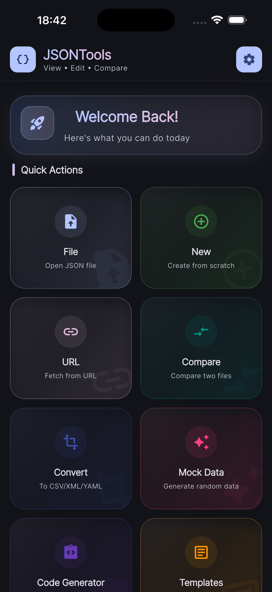
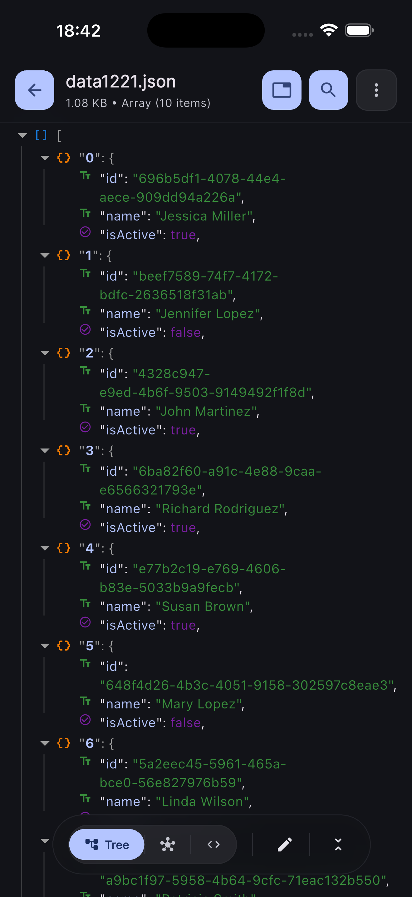
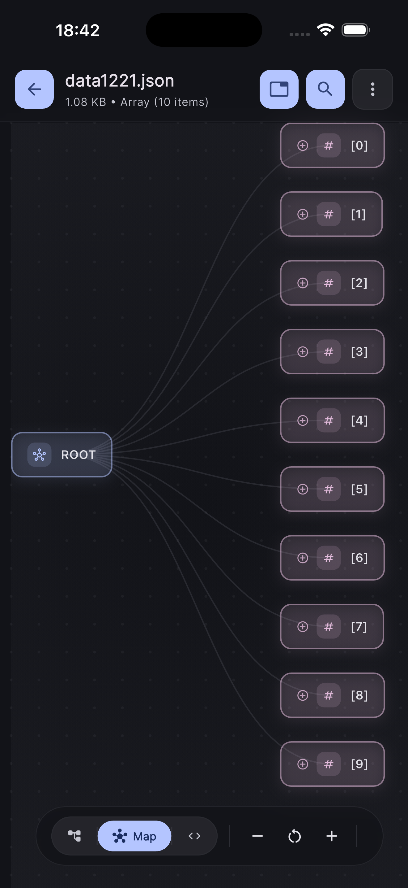

Projeler
JSON'la calismanin
Gelistirici Araci
JSON'la calismanin
en hizli yolu.
JSON verilerini formatlamak, dogrulamak ve donusturmek icin hizli ve guvenli araclar.
JsonTools, gelistiriciler icin olusturulmus, JSON verilerini analiz etmeyi, formatlamayi ve sikistirmayi kolaylastiran guclu bir arac setidir. Cevrimdisi calisarak veri guvenligini korur.
Cevrimdisi & Guvenli
Koyu Mod
FormatMinifyValidate
{
"app": "JsonTools",
"version": 2.4,
"offline": true,
"formats": ["xml", "yaml"]
}
✓ valid · 4 keys · 68 bytes
Ozellikler
JSON icin ihtiyacin olan her sey
Formatlamadan donusturmeye, hata ayiklamadan cevrimdisi calismaya kadar.
Formatla & Dogrula
Dagilmis JSON'u okunabilir hale getir, hatalari aninda yakala.
Minify
JSON'u tek satira sikistir, gereksiz bosluklardan kurtul.
XML / YAML Donustur
JSON'u XML veya YAML'e tek dokunusla donustur.
Cevrimdisi Mod
Internet olmadan calis; verin cihazindan cikmaz.
Koyu Mod
Goze rahat, gelistirici dostu koyu tema.
Hata Ayiklama
Satir bazli hata bildirimi ile sorunu hizlica bul.
Arayuz
Uygulamadan gorunumler


